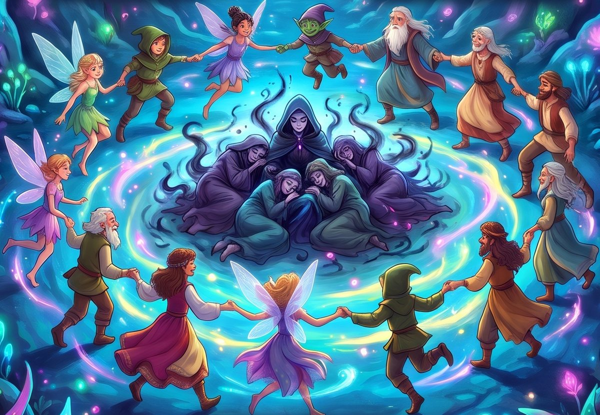

The school presents
El bosque mágico
The Magical Forest
A play by Vicente Cañón

With all our students, from Pre-K to 6th grade
Joy · Friendship · Generosity
Date:
Time:
Place:
· United States · Free admission
“El bosque mágico” (The Magical Forest) · Vicente Cañón © 2019 · www.obrasteatro.com